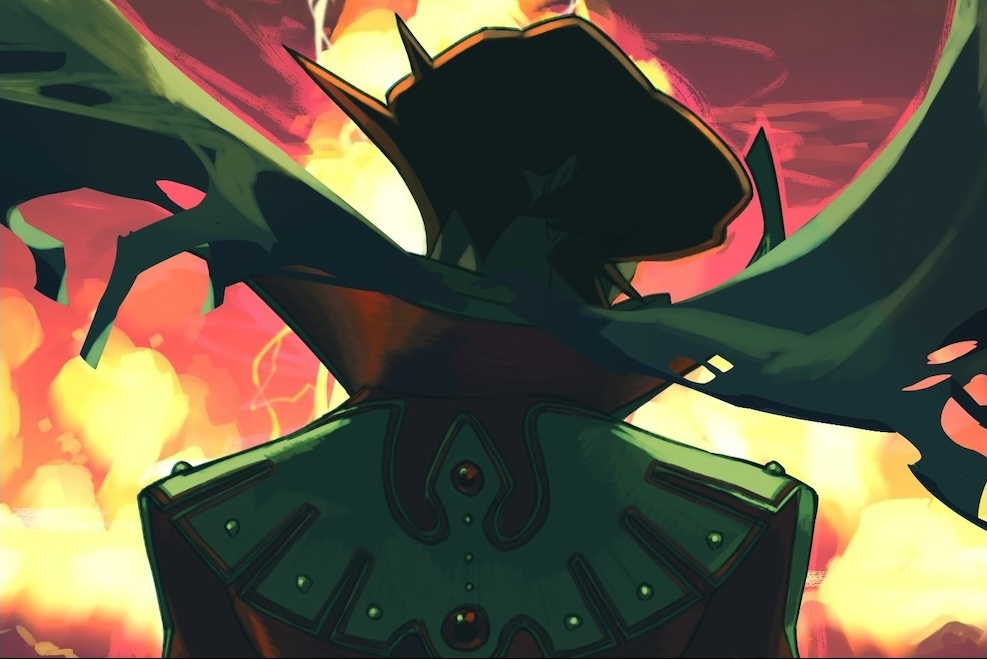

Infinite Red: The Day the Earth Stood Still
Mode Gone (2023)
Original sound design inspired by 90s computer operating systems and games consoles.
[Play]
Resistor
Godot Wild Jam (2022)
Original synthwave-inspired soundtrack and sound design. Ranked #1 in audio category.
[Play]・[Listen]
Jaye and the Hungry Sea
Black & White Jam (2021)
Original dark ambient score and sound design.
[Play]・[Listen]